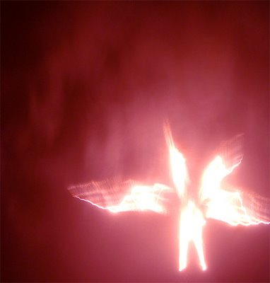

일련번호: SCP-001
등급: 유클리드/케테르(Euclid/Keter)
특수 격리 절차: SCP-001의 특성상, 격리 절차는 필요없다. 미리 결정된 위치(제0기지)에서 충분히(10 km+) 떨어진 안전 거리에서 하루 24시간 1주 7일 내내 SCP-001을 감시한다.제0기지의 위치는 오로지 현직 SCP 관리자와, 제0기지 현장에서 SCP-001을 감시하는 아브라함 계통 종교를 믿는 감독관 등급 요원 한 명(O5-14)만 알고 있다. 상기 요원은 SCP-001이 활성화되었을 경우 필요한 모든 조취를 취할 권한을 얻는다. 또한 SCP-001의 행동에 변화가 생기는 것이 XK급 세계멸망 시나리오의 시작으로 간주되므로, 행동에 어떠한 변화라도 있다면 즉시 관리자 및 다른 감독관 등급 요원들에게 경보를 알려야 한다.
어떠한 형태로든 SCP-001이 활성화되었을 경우, 재단 인원들은 즉시 일련의 긴급 명령 파트모스 절차들을 열람해야 한다. 긴급 명령 파트모스의 알고리즘 해독은 지정 관찰관의 감독 하에 제0기지 현장에서 실시되어야 하며, SCP-001이 활성화되는 사건이 발생했을 시에만 각 SCP 재단 사무소로 전송되어야 한다. 긴급 명령 파트모스의 구성 요소 중 하나 이상의 것에 대하여 필수적 역할을 맡고 있는 재단 인원은 다음과 같은 예방 조치를 취할 것이 권고된다.
하나 이상의 조직적 아브라함 계통 종교와 우호적인 관계를 유지해야 한다.
다음 보급품의 보유량을 유지해야 한다. 성수, 묵주, 십자가상, 십자가, 또는 그 외 주교급 이상의 아브라함 계통 종교 성직자에게 축복받은 종교적 상징, 아브라함 계통 종교 경전의 사본, 휴대 가능한 표준 긴급 보급품(긴급 구호 가방).
전천년의 휴거 시나리오 발생시, 필수적인 역할을 하는 모든 인원들에게는 아브라함 계통 종교를 믿지 않는 이차 인원이 지정된다. 전술한 이차 인원들은 자신이 지정된 필수 인원의 긴급 명령 파트모스 사본의 소재지와 밈적 살해인자 예방접종에 대해서 알고 있어야 하며, 필요한 경우 필수 인원의 임무를 대신 수행할 준비를 갖추어야 한다.
가능한 XK급 세계멸망 시나리오와 관련된 모든 SCP와 우호 관계를 유지해야 한다.
설명: SCP-001은 인간형 독립체로, 신장은 약 700 큐빗이며, 티그리스 강과 유프라테스 강이 교차하는 곳 근처 알 수 없는 곳에 위치해 있다. 해당 독립체에 대해 밝혀진 특징은 다음과 같다.
독립체의 어깨, 등, 관자놀이, 발목, 손목에 돋아나 있는, 발광하는 날개 모양의 부속지 몇 개. 정확한 개수는 세어본 적이 없지만, 대부분의 관찰자들은 날개의 개수를 2에서 108 사이로 잡았으며, 그 평균수는 4였다.
검 또는 도의 형태의 무기(SCP-001-2). 이 무기는 태양에 필적하는 온도의 불길을 발산한다. 하지만 분광 사진 분석 결과, 그 고열이 주위 환경에 파괴적 효과를 미치는 것이 발견되지는 않았다. SCP-001 반경 1 킬로미터 안으로 진입하는 것은 무엇이든지 즉시 이 무기에 얻어맞고 그 존재 자체가 지워진다. SCP-001에 대한 모든 적대적 행동은 공격자의 소멸이라는 결과를 낳았으며, 그 사정거리에는 제한이 없다(사건 보고서 회신: 2004년 12월 26일 인도양 잠수함 미사일 실험 참조)
SCP-001는 머리를 호소하는 듯한 몸짓으로 숙이고, SCP-001-2가 아래를 향하도록 양 손으로 잡아 머리 앞에 받쳐든 자세로 서 있다. [데이터 편집됨] 년도 더 전에 재단 설립자가 처음 기록한 이후 줄곧 SCP-001은 이 자세를 바꾸지 않았다.
SCP-001에 노출된 인간들은 머릿속에서 목소리가 울리며, 피험자들이 감히 거역할 수 없는 명령을 내렸다고 보고했다. 가장 흔한 명령은 “잊어라”이며, 이 명령의 결과 피험자는 SCP-001에서 멀어지면서, 대상을 만난 기억이 모두 사라진다. 드물게 다른 명령이 주어지는 경우도 있다. 가장 대표적인 것으로 재단 설립자에게 내려진 명령(“준비하라”)이 있으며, 이것이 현재 인류의 존재를 심각하게 위협하는 모든 초자연적 또는 불가해한 것들을 분류하고 격리하기 위해 [데이터 편집됨]을 설립한 동기 부여가 되었다고 한다. 그것이 바로 현재 SCP 재단으로 알려진 조직이다.
관찰자들은 SCP-001이 어마어마한 크기의 문 앞에 서 있는 것으로 보인다고 보고했다. 멀리서 촬영한 사진에서는 가끔 목가적인 수풀로 보이는 것이 탐지된다. 이 수풀 속에는 SCP-001과 동일한 물질로 구성된 독립체들이 숱하게 존재하며, 그 조성을 알 수 없는 과일나무 여러 종이 발견된다. 그 중 주목할 만한 것은 수풀의 한가운데 위치한 것으로 보이는 거대한 과일나무 두 그루인데, 그 중 한 그루는 평범한 사과나무처럼 생겼지만, 다른 한 그루에는 지구상에서 발견된 바 없는 열매가 열려 있다. 그 열매의 모습은 [데이터 말소].
재단 설립자는 고대 바빌로니아의 글과 사해문서의 상관관계에 근거하여, SCP-001이 지키고 있는 문이 바로 [말소됨]으로 들어가는 문이라고 믿고 있다. 그것이 사실이라면, SCP-001이라고 알려진 독립체는 [말소됨]이라는 것을 추론할 수 있다.